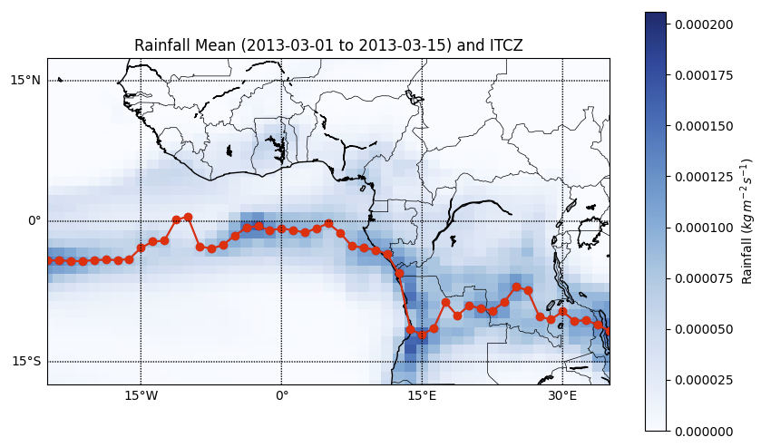
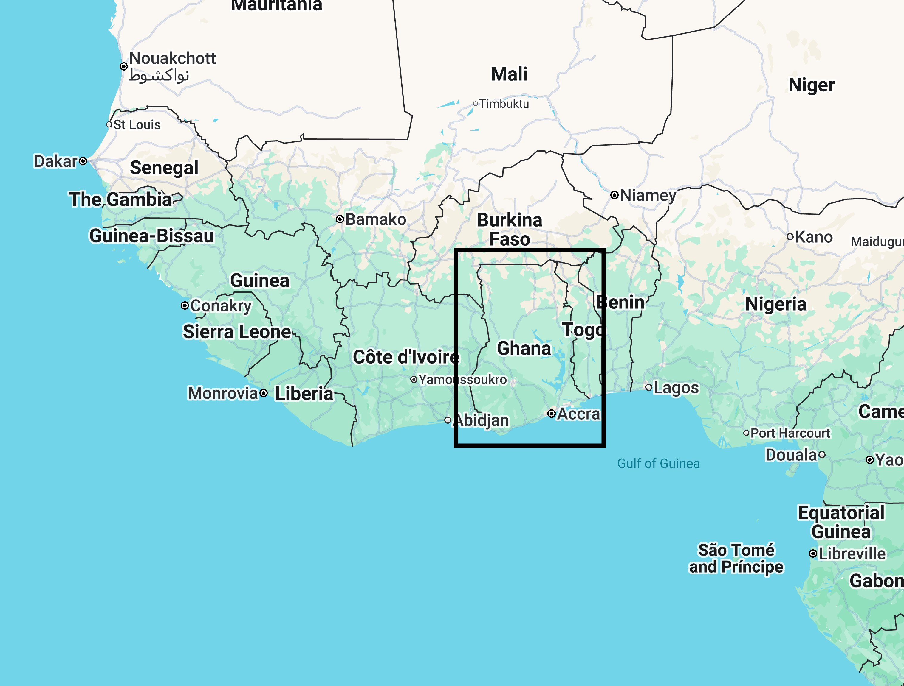

Seasonal Rainbelt Forecast
Currently working on seasonal rainbelt forecasting using a data-driven approach that incorporates partial differential equations (PDE) as a regularizer to improve model accuracy and physical consistency.
Keywords: Weather Forecasting, Remote Sensing, Bayesian & Frequentist ML, UQ, XAI
My research lies at the intersection of artificial intelligence and environmental science, with a strong focus on developing accurate and interpretable forecasting models for weather and climate systems. I employ deep learning, Bayesian machine learning, and explainable AI to understand and predict environmental changes across time and space. My work leverages remote sensing data—including satellite and UAV imagery—to support land use monitoring, climate impact assessment, and risk estimation. Through these efforts, I aim to contribute to sustainable environmental planning and resilience-building in the face of climate variability and change. Some specific focus areas include:
Computing and Data Sciences, Boston University, Massachusetts, USA
CYENS Centre of Excellence (SuPerWorld MRG), Nicosia, Cyprus
Indian Institute of Technology Guwahati, Assam, India
CYENS Centre of Excellence (SuPerWorld MRG), Nicosia, Cyprus

Currently working on seasonal rainbelt forecasting using a data-driven approach that incorporates partial differential equations (PDE) as a regularizer to improve model accuracy and physical consistency.

A deep learning model predicts rainfall over Ghana with accuracy comparable to or better than ECMWF’s 18-hour forecasts. Combining this model with traditional numerical weather prediction further improves performance.
For all publications, please visit my Google Scholar page.
Interested in collaboration? Please email me at indrajit@bu.edu with details about your background and research interests.
Interested for colaboration? Please don't hesitate to email me at indrajit@bu.edu, providing details about your background and research interests.
Want to know more about my projects? Kindly email me at indrajit@bu.edu, using the title of the project or research paper as the subject.